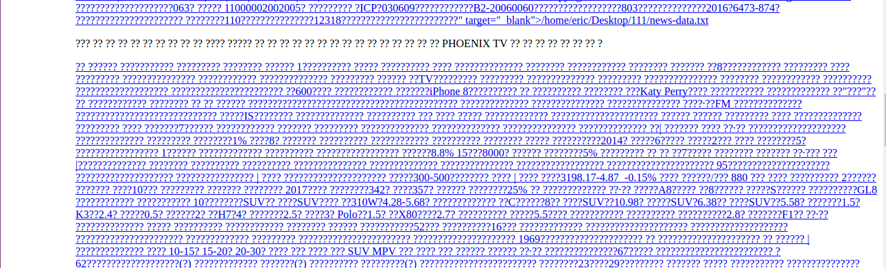

$(window).scroll(function (event) { var scroll = $(window).scrollTop(); // Do something });
5. 获取 Viewport 宽度和高度
1 2 3 4
var w = Math.max(document.documentElement.clientWidth, window.innerWidth || 0); var h = Math.max(document.documentElement.clientHeight, window.innerHeight || 0); jQuery( window ).width(); // height of browser viewport jQuery( window ).height(); // width of browser viewport
返回 HTML document 的宽度和高度:
1 2
jQuery(document).height(); // return height of HTML document jQuery(document).width(); // return width of HTML document
$.when( $.ajax( "/page1.php" ), $.ajax( "/page2.php" ) ).done(function( a1, a2 ) { // a1 and a2 are arguments resolved for the page1 and page2 ajax requests, respectively. // Each argument is an array with the following structure: [ data, statusText, jqXHR ] var data = a1[ 0 ] + a2[ 0 ]; // a1[ 0 ] = "Whip", a2[ 0 ] = " It" if ( /Whip It/.test( data ) ) { alert( "We got what we came for!" ); } });
$ .ajax( { url: 'url', data: { id: myDataId }, // The type of data that you're expecting back from the server // Default: Intelligent Guess (xml, json, script, or html) dataType: 'html', // When sending data to the server, use this content type. // Default is "application/x-www-form-urlencoded; charset=UTF-8", which is fine for most cases contentType: 'application/x-www-form-urlencoded; charset=UTF-8' } ) .done( function( data, textStatus, jqXHR ) { } ) .fail( function( jqXHR, textStatus, errorThrown ) { } )
TypeError: You must specify a "protocol" for the proxy type (http, https, socks, socks4, socks4a, socks5, socks5h, pac+data, pac+file, pac+ftp, pac+http, pac+https)
当由服务器返回一些特殊媒体资源的时候，一定要在客户端和服务器端之间声明好这种资源的媒体类型，如下就是因为没有在 Spring 中恰当定义返回的 XML 媒体资源类型导致的乱码问题:

最后通过如下方法完美解决:
1 2 3 4 5 6
@Controller @RequestMapping(value = "/pets/{petId}", method = RequestMethod.GET, produces="application/xml") @ResponseBody public Pet getPet(@PathVariable String petId, Model model){ // implementation omitted }
(2) 关于 HTML 转义问题
从服务器传回来的内容中 content 包含有 > 字符，前台使用拼接字符串的方式构建 HTML 元素:
1
var html = '<form>' + content + '</form>'
这样的话，<form> 会提前因为遇见 > 字符而闭合，因此需要在前台替换一下才可以正常工作:
1
content = content.replace( />/g, '>' )
获取 Chrome 浏览器页面的编码
The Document.characterSet read-only property returns the character encoding of the current document. The character encoding is the character set used for rendering (渲染) the document, which may be different from the encoding specified by the page. (The user can override the encoding.).